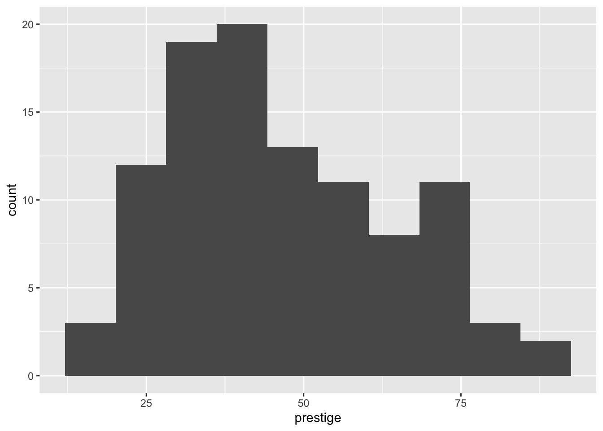

The R library ggplot2 is very powerful for plotting but you may find the syntax little strange. There are plenty of examples at the ggplot2 online help website. The ggplot2 package is loaded as part of the tidyverse set of packages.
3-dimensional graphics (opt for rgl package instead)
Graph-theory type graphs (nodes/edges layout; opt for igraph and other packages)
Interactive graphics (opt for plotly, ggvis and other packages)
Grammar of Graphics
The main idea behind the grammar of graphics of (Wilkinson 2005) is to mimic the manual graphing approach by defining building blocks and combining them to create the figure.
The building blocks of a graph are:
data
aesthetic mapping
geometric object
transformation or re-expression of data
scales
coordinate system
position adjustments
faceting
Aesthetic Mapping (aes)
In ggplot land aesthetic means visualisation features or aesthetics. These are
position (i.e., on the x and y axes)
color (“outside” color)
fill (“inside” color)
shape (of points)
linetype
size
Aesthetic mappings are set with the aes() function.
Geometric Objects (geom)
Geometric objects or geoms are the actual marking or inking on a plot such as:
points (geom_point, for scatter plots, dot plots, etc)
lines (geom_line, for time series, trend lines, etc)
boxplot (geom_boxplot, for boxplots)
A plot must have at least one geom but there is no upper limit. In order to add a geom to a plot, the + operator is employed. A list of available geometric objects can be obtained by typing geom_<tab> in Rstudio. The following command can also be used which will open a Help window.
help.search("geom_", package = "ggplot2")
ggplot2 in the tidyverse
ggplot2 is now part of the tidyverse. We have installed tidyverse in a previous workshop so you will not need to install it again.
We can now load the ggplot2 library with the commands:
Code
library(tidyverse)
── Attaching core tidyverse packages ──────────────────────── tidyverse 2.0.0 ──
✔ dplyr 1.1.4 ✔ readr 2.1.5
✔ forcats 1.0.0 ✔ stringr 1.5.1
✔ ggplot2 3.5.1 ✔ tibble 3.2.1
✔ lubridate 1.9.3 ✔ tidyr 1.3.1
✔ purrr 1.0.4
── Conflicts ────────────────────────────────────────── tidyverse_conflicts() ──
✖ dplyr::filter() masks stats::filter()
✖ dplyr::lag() masks stats::lag()
ℹ Use the conflicted package (<http://conflicted.r-lib.org/>) to force all conflicts to become errors
In order to work with ggplot2, we must have a data frame or a tibble containing our data. We need to specify the aesthetics or how the columns of our data frame can be translated into positions, colours, sizes, and shapes of graphical elements.
Let’s start with the rangitikei data we used in an earlier workshop
ggplot(rangitikei) +aes(x = vehicle, y = people) +geom_point()
The aes part defines the “aesthetics”, which is how columns of the dataframe map to graphical attributes such as x and y position, colour, size, etc. An aesthetic can be either numeric or categorical and an appropriate scale will be used. After this, we add layers of graphics called geom_s. geom_point layer is employed to map x and y and we need not specify all the options for geom_point.
Exercise 2.1
Why does the following give an error and how would you fix it?
Code
ggplot(data = rangitikei) +geom_point()
Adding layers
ggplot works by adding layers to your plots. Your plots must include aes() and a geom_; after that we can add extras.
We can add a title using labs() or ggtitle() functions. Try-
Code
ggplot(rangitikei) +aes(x = vehicle, y = people, color = river) +geom_point() +ggtitle("No. of people vs No. of vehicles")
or
Code
ggplot(rangitikei)+aes(x = vehicle, y = people) +geom_point() +labs(title ="No. of people vs No. of vehicles")
Note that labs() allows captions and subtitles. Check out ?labs() for all the options.
Exercise 2.2
Remake the above graph, adjusting the x axis to say Vehicles using the labs() function.
Code
# your code goes here
geom_smooth is additionally used to show trends.
Code
ggplot(rangitikei) +aes(x = vehicle, y = people) +geom_point() +geom_smooth()
`geom_smooth()` using method = 'loess' and formula = 'y ~ x'
Exercise 2.3
Run this code in your head and predict what the output will look like. Then, run the code in R and check your predictions.
Code
ggplot(rangitikei) +aes(x = vehicle, y = people) +geom_point()+geom_smooth(se =FALSE)
`geom_smooth()` using method = 'loess' and formula = 'y ~ x'

Similar to geom_smooth, a variety of other geoms are available. For example, geom_boxplot():
Code
ggplot(rangitikei) +aes(x =factor(wind), y = people) +geom_boxplot()
You can add additional information to your graph by using multiple geoms. Each geom accepts a particular set of mappings; for example geom_text() accepts a labels mapping. Try-
Faceting is the ggplot2 option to create separate graphs for subsets of data. ggplot2 offers two functions for creating small multiples:
facet_wrap(): define subsets as the levels of a single grouping variable
facet_grid(): define subsets as the crossing of two grouping variables
The following arguments are common to most scales in ggplot2:
name: the first argument gives the axis or legend title
limits: the minimum and maximum of the scale
breaks: the points along the scale where labels should appear
labels: the labels that appear at each break
Adjusting scales
Specific scale functions may have additional arguments. Some of the available Scales are:
Scale
Examples
scale_color_
scale_color_discrete
scale_fill_
scale_fill_continuous
scale_size_
scale_size_manual
scale_size_discrete
scale_shape_
scale_shape_discrete
scale_shape_manual
scale_linetype_
scale_linetype_discrete
scale_x_
scale_x_continuous
scale_x_log
scale_x_date
scale_y_
scale_y_reverse
scale_y_discrete
scale_y_datetime
In RStudio, we can type scale_ followed by TAB to get the whole list of available scales.
Try-
Code
ggplot(rangitikei) +aes(x = vehicle, y = people, color =factor(temp)) +geom_point() +scale_x_continuous(name ="No. of Vehicles") +scale_y_continuous(name ="No. of people") +scale_color_discrete(name ="Temperature")
The other coding option is shown below:
Code
ggplot(rangitikei) +aes(x = vehicle, y = people, color =factor(temp)) +geom_point() +xlab("No. of Vehicles") +ylab("No. of people") +labs(colour="Temperature")
Note that a desired graph can be obtained in more than one way.
Themes
Themes can help adjust different pieces of your graphs to make them publication or presentation ready. Here you can adjust font, size, axis features, etc.
The ggplot2 theme system handles plot elements (not data based) such as
Axis labels
Plot background
Facet label background
Legend appearance
Built-in themes include:
theme_gray() (default)
theme_bw()
theme_minimal()
theme_classic()
Code
p1 <-ggplot(rangitikei) +aes(x = vehicle, y = people, color =factor(temp)) +geom_point()
Note that the graph is assigned an object name p1 and nothing will be printed unless we then print the object p1. Here, the plot is assigned to an object to make applying and comparing different themes simple.
Code
p1 <-ggplot(rangitikei) +aes(x = vehicle, y = people, color =factor(temp)) +geom_point()p1
Try-
Code
p1 +theme_light()
Code
p1 +theme_bw()
Specific theme elements can be overridden using theme(). For example:
A cheat sheet for ggplot2 is available at https://www.rstudio.com/resources/cheatsheets/ (optional to download). There are many other packages which incorporate ggplot2 based graphs or dependent on it.
Multiple plots
Sometimes you want to creat a figure with multiple plots. Rather than trying to combine the data and then faceting, you may need to save each as an object and combine with a helper library. The library patchwork allows complex composition arbitrary plots, which are not produced using the faceting option. Try
Code
library(patchwork)p1 <-qplot(people, data = rangitikei, geom ="dotplot") # change this to a ggplot
Warning: `qplot()` was deprecated in ggplot2 3.4.0.
Bin width defaults to 1/30 of the range of the data. Pick better value with
`binwidth`.
Have a quick google of the library ggpubr for the function ggarrange as another option for combining plots.
Dataset Prestige
As you work through this workshop, you can copy the code and paste it into a code chunk. Write notes and observations to your self as you go.
We will be using a well-known dataset called Prestige from the car R package. This dataset deals with prestige ratings of Canadian occupations. The Prestige dataset has 102 rows and 6 columns. Each row (or ‘observation’) is an occupation.
This data frame contains the following columns:
education - Average education of occupational incumbents, years, in 1971.
income - Average income of incumbents, dollars, in 1971.
women - Percentage of incumbents who are women.
prestige - Pineo-Porter prestige score for occupation, from a social survey conducted in the mid-1960s.
census - Canadian Census occupational code.
type - Type of occupation. A factor with levels: bc, Blue Collar; prof, Professional, Managerial, and Technical; wc, White Collar. (includes four missing values).
First we’ll load the data. The dataset sits in the car package, so you need to load the car package first.
Code
library(car)data(Prestige)
Exercise 2.5
Draw a bar chart for type. These plots show the count or relative frequency of blue collar (bc), professional (prof), and white collar (wc) professions in the dataset.
Code
# your code goes here
Exercise 2.6
Draw a histogram of prestige.
Code
# your code goes here
Below demonstrates the flexibility of ggplot code. You can specify the data argument by piping it into ggplot, or by putting it as an argument to ggplot or a geom_. Likewise, the mapping or aes information, which determines which variables are used where, can be added as an extra line or specified inside the ggplot or geom_ function.
Now, this histogram, where the number of bins has been chosen for us, looks a bit “spiky” to my eye. You can control the number of bins by adding an argument bins = 10.
Now let’s display the prestige scores for each profession as a dot plot.
Note that I’m including the code-chunk option #| fig-height: 12 at the beginning of my code chunk so that the plot is big enough to show all the professions without overlap.
Code
Prestige |>ggplot() +aes(x =rownames(Prestige), y = prestige) +geom_point() +coord_flip()
What a mess!
We can tidy it up by ordering the professions on the plot according to prestige. First, we move the professions from rownames to a variable. Then, we fct_reorder the professions using the prestige scores. Then, the resulting data gets piped into ggplot.
Prestige |>ggplot() +aes(x = prestige, # these aes settings are usedcol = type # by both geoms ) +geom_density(aes(fill = type), # the 'fill' aes goes here because alpha = .2# geom_rug doesn't use 'fill' ) +geom_rug()
With which plot – the ECDF or the density plot – is it easier to compare the distributions of prestige scores among these groups?
Exercise 2.10
Obtain the {0.05, 0.1, 0.25, 0.5, 0.75, 0.9, 0.95} quantiles of prestige:
Code
# your code goes here
Exercise 2.11
Obtain the scatter plot (with and without marginal boxplots) prestige vs. education : How can you describe the relationship implied by the pattern?
Code
# your code goes here
Exercise 2.12
Make a bubble or balloon plot prestige vs. education vs. income with income forming the bubble size.
Make a different scatter plot using the same three variables. Keep x = education, y = prestige but use a different option to illustrate the influence of income.
Code
# your code goes here
Exercise 2.13
Create prestige ~ education | type graphs. That is, prestige ~ education grouped by type as colours and/or panels.
Code
# your code goes here
Select answers: # Answer: Exercise 2.5 {-}
Code
p <- Prestige |>ggplot() +aes(type) +geom_bar()p
Answer: Exercise 2.7a
Code
summary(Prestige)
education income women prestige
Min. : 6.380 Min. : 611 Min. : 0.000 Min. :14.80
1st Qu.: 8.445 1st Qu.: 4106 1st Qu.: 3.592 1st Qu.:35.23
Median :10.540 Median : 5930 Median :13.600 Median :43.60
Mean :10.738 Mean : 6798 Mean :28.979 Mean :46.83
3rd Qu.:12.648 3rd Qu.: 8187 3rd Qu.:52.203 3rd Qu.:59.27
Max. :15.970 Max. :25879 Max. :97.510 Max. :87.20
census type
Min. :1113 bc :44
1st Qu.:3120 prof:31
Median :5135 wc :23
Mean :5402 NA's: 4
3rd Qu.:8312
Max. :9517
Code
library(psych)describe(Prestige)
vars n mean sd median trimmed mad min max
education 1 102 10.74 2.73 10.54 10.63 3.15 6.38 15.97
income 2 102 6797.90 4245.92 5930.50 6161.49 3060.83 611.00 25879.00
women 3 102 28.98 31.72 13.60 24.74 18.73 0.00 97.51
prestige 4 102 46.83 17.20 43.60 46.20 19.20 14.80 87.20
census 5 102 5401.77 2644.99 5135.00 5393.87 4097.91 1113.00 9517.00
type* 6 98 1.79 0.80 2.00 1.74 1.48 1.00 3.00
range skew kurtosis se
education 9.59 0.32 -1.03 0.27
income 25268.00 2.13 6.29 420.41
women 97.51 0.90 -0.68 3.14
prestige 72.40 0.33 -0.79 1.70
census 8404.00 0.11 -1.49 261.89
type* 2.00 0.40 -1.36 0.08
Code
describeBy(education + income + women + prestige ~ type, data = Prestige)
Descriptive statistics by group
type: bc
vars n mean sd median trimmed mad min max
education 1 44 8.36 1.16 8.35 8.32 1.14 6.38 10.93
income 2 44 5374.14 2004.33 5216.50 5338.56 2275.05 1656.00 8895.00
women 3 44 18.97 26.15 4.72 14.48 7.01 0.00 90.67
prestige 4 44 35.53 10.02 35.90 35.46 11.34 17.30 54.90
range skew kurtosis se
education 4.55 0.34 -0.76 0.18
income 7239.00 0.17 -1.00 302.16
women 90.67 1.36 0.51 3.94
prestige 37.60 0.05 -1.03 1.51
------------------------------------------------------------
type: prof
vars n mean sd median trimmed mad min max
education 1 31 14.08 1.39 14.44 14.16 1.22 11.09 15.97
income 2 31 10559.45 5422.82 8865.00 9700.04 3955.58 4614.00 25879.00
women 3 31 25.51 28.37 11.68 21.03 13.86 0.58 96.12
prestige 4 31 67.85 8.68 68.40 67.34 9.19 53.80 87.20
range skew kurtosis se
education 4.88 -0.47 -0.93 0.25
income 21265.00 1.37 1.36 973.97
women 95.54 1.14 -0.04 5.09
prestige 33.40 0.36 -0.67 1.56
------------------------------------------------------------
type: wc
vars n mean sd median trimmed mad min max
education 1 23 11.02 0.92 11.13 11.03 0.68 9.17 12.79
income 2 23 5052.30 1944.32 4741.00 4960.53 2342.51 2448.00 8780.00
women 3 23 52.83 33.11 56.10 53.19 47.77 3.16 97.51
prestige 4 23 42.24 9.52 41.50 41.61 8.60 26.50 67.50
range skew kurtosis se
education 3.62 -0.20 -0.27 0.19
income 6332.00 0.44 -1.18 405.42
women 94.35 -0.10 -1.58 6.90
prestige 41.00 0.63 0.18 1.98
Wilkinson, L. 2005. The Grammar of Graphics. Berlin, Heidelberg: Springer-Verlag.
Source Code
---title: "Chapter 2 Workshop"---## Graphing with `ggplot2` {.unnumbered}The R library `ggplot2` is very powerful for plotting butyou may find the syntax little strange. There are plenty of examples at the [`ggplot2` online help website](https://ggplot2.tidyverse.org/reference/). The `ggplot2` package is loaded as part of the `tidyverse` set of packages.::::{.columns}:::{.column}Advantages of `ggplot2` are the following:- employs the "grammar of graphics" of [@Wilkinson]- plotting involves a high level of abstraction- very flexible and complete graphics system- theme system for getting attractive plots- Fast growing and actively developed::::::{.column}Some disadvantages of `ggplot2` are the following:- 3-dimensional graphics (opt for `rgl` package instead)- Graph-theory type graphs (nodes/edges layout; opt for `igraph` and other packages)- Interactive graphics (opt for `plotly`, `ggvis` and other packages):::::::## Grammar of GraphicsThe main idea behind the grammar of graphics of [@Wilkinson] is to mimicthe manual graphing approach by defining building blocks and combining themto create the figure. The building blocks of a graph are:- data- aesthetic mapping- geometric object- transformation or re-expression of data- scales- coordinate system- position adjustments- faceting## Aesthetic Mapping (`aes`)In ggplot land *aesthetic* means visualisation features or aesthetics.These are- position (i.e., on the x and y axes)- color ("outside" color)- fill ("inside" color)- shape (of points)- linetype- sizeAesthetic mappings are set with the `aes()` function.## Geometric Objects (`geom`)Geometric objects or `geoms` are the actual marking or inking on a plotsuch as:- points (`geom_point`, for scatter plots, dot plots, etc)- lines (`geom_line`, for time series, trend lines, etc)- boxplot (`geom_boxplot`, for boxplots)*A plot must have at least one `geom` but there is no upper limit.* Inorder to add a `geom` to a plot, the `+` operator is employed. A list ofavailable geometric objects can be obtained by typing `geom_<tab>` inRstudio. The following command can also be used which will open a Helpwindow. help.search("geom_", package = "ggplot2")# ggplot2 in the tidyverse`ggplot2` is now part of the `tidyverse`. We have installed `tidyverse` in a previous workshop so you will not need to install it again. We can now load the `ggplot2` library with the commands:```{r, warninng=FALSE}library(tidyverse)```In order to work with `ggplot2`, we must have a `data frame` or a `tibble`containing our data. We need to specify the `aesthetics` or how thecolumns of our data frame can be translated into positions, colours,sizes, and shapes of graphical elements.Let's start with the rangitikei data we used in an earlier workshop```{r load in rangitikei data}rangitikei <-read.csv("../data/rangitikei.csv",header=TRUE, row.names =1 )``````{r}ggplot(rangitikei) +aes(x = vehicle, y = people) +geom_point()```The `aes` part defines the "aesthetics", which is how columns of the dataframe map to graphical attributes such as x and y position, colour, size, etc. An aesthetic can be either numeric or categorical and an appropriate scale will be used. After this, we add layers of graphics called `geom_`s. `geom_point` layer is employed to map x and y and we need not specify all the options for `geom_point`.# Exercise 2.1 {-}Why does the following give an error and how would you fix it?```{r}#| eval: falseggplot(data = rangitikei) +geom_point()```## Adding layersggplot works by adding layers to your plots. Your plots must include `aes()` and a `geom_`; after that we can add extras.We can add a title using *labs()* or *ggtitle()* functions. Try-```{r, fig.show="hide"}ggplot(rangitikei) +aes(x = vehicle, y = people, color = river) +geom_point() +ggtitle("No. of people vs No. of vehicles")```or```{r, fig.show="hide"}ggplot(rangitikei)+aes(x = vehicle, y = people) +geom_point() +labs(title ="No. of people vs No. of vehicles")```Note that *labs()* allows captions and subtitles. Check out `?labs()` for all the options.# Exercise 2.2 {-}Remake the above graph, adjusting the x axis to say `Vehicles` using the `labs()` function. ::: {#answer}```{r}# your code goes here```:::`geom_smooth` is additionally used to show trends.```{r}ggplot(rangitikei) +aes(x = vehicle, y = people) +geom_point() +geom_smooth()```# Exercise 2.3 {-}Run this code in your head and predict what the output will look like. Then, run the code in R and check your predictions.```{r}ggplot(rangitikei) +aes(x = vehicle, y = people) +geom_point()+geom_smooth(se =FALSE)```::: {#answer}:::Similar to `geom_smooth`, a variety of other `geoms` are available. For example, `geom_boxplot()`:```{r}ggplot(rangitikei) +aes(x =factor(wind), y = people) +geom_boxplot()```You can add additional information to your graph by using multiple `geom`s. Each `geom` accepts a particular set of mappings; for example `geom_text()` accepts a `labels` mapping. Try-```{r, fig.show="hide"}ggplot(rangitikei) +aes(x = vehicle, y = people) +geom_point() +geom_text(aes(label = w.e), size =5)```# Exercise 2.4 {-}Will these two graphs look different? Why/why not? What happens when you run the code? ```{r}ggplot(data = rangitikei,mapping =aes(x = vehicle, y = people)) +geom_point() +geom_smooth()ggplot() +geom_point(data = rangitikei,mapping =aes(x = vehicle, y = people) ) +geom_smooth(data = rangitikei,mapping =aes(x = vehicle, y = people) )```::: {#answer}:::Explore multiple `geom`s and thing about how different types of data might be displayed in each.## PanelsThe faceting option allows a collection of small plots with the samescales. Try-```{r}ggplot(rangitikei) +aes(x=vehicle, y=people) +geom_point() +facet_wrap(~ river) ```Faceting is the `ggplot2` option to create separate graphs for subsetsof data. `ggplot2` offers two functions for creating small multiples:1. `facet_wrap()`: define subsets as the levels of a single grouping variable2. `facet_grid()`: define subsets as the crossing of two grouping variablesThe following arguments are common to most scales in `ggplot2`:- **name:** the first argument gives the axis or legend title- **limits:** the minimum and maximum of the scale- **breaks:** the points along the scale where labels should appear- **labels:** the labels that appear at each break## Adjusting scales Specific scale functions may have additional arguments. Some of theavailable Scales are:| **Scale** | **Examples** ||-------------------|---------------------------|| `scale_color_` | `scale_color_discrete` || `scale_fill_` | `scale_fill_continuous` || `scale_size_` | `scale_size_manual` || | `scale_size_discrete` || | || `scale_shape_` | `scale_shape_discrete` || | `scale_shape_manual` || `scale_linetype_` | `scale_linetype_discrete` || | || `scale_x_` | `scale_x_continuous` || | `scale_x_log` || | `scale_x_date` || `scale_y_` | `scale_y_reverse` || | `scale_y_discrete` || | `scale_y_datetime` |In RStudio, we can type `scale_` followed by TAB to get the whole listof available scales.Try-```{r}ggplot(rangitikei) +aes(x = vehicle, y = people, color =factor(temp)) +geom_point() +scale_x_continuous(name ="No. of Vehicles") +scale_y_continuous(name ="No. of people") +scale_color_discrete(name ="Temperature")```The other coding option is shown below:```{r, fig.show = 'hide'}ggplot(rangitikei) +aes(x = vehicle, y = people, color =factor(temp)) +geom_point() +xlab("No. of Vehicles") +ylab("No. of people") +labs(colour="Temperature") ```Note that a desired graph can be obtained in more than one way.## ThemesThemes can help adjust different pieces of your graphs to make them publication or presentation ready. Here you can adjust font, size, axis features, etc.The `ggplot2` theme system handles plot elements (not data based) suchas- Axis labels- Plot background- Facet label background- Legend appearanceBuilt-in themes include:- `theme_gray()` (default)- `theme_bw()`- `theme_minimal()`- `theme_classic()````{r}p1 <-ggplot(rangitikei) +aes(x = vehicle, y = people, color =factor(temp)) +geom_point()```Note that the graph is assigned an object name `p1` and nothing will beprinted unless we then print the object `p1`. Here, the plot is assigned to an object to make applying and comparing different themes simple.```{r}p1 <-ggplot(rangitikei) +aes(x = vehicle, y = people, color =factor(temp)) +geom_point()p1```Try-```{r}p1 +theme_light()``````{r}p1 +theme_bw()```Specific theme elements can be overridden using `theme()`. For example:```{r}p1 +theme_minimal() +theme(text =element_text(color ="red"))```All theme options can be seen with `?theme`.To specify a theme for a whole document, use```{r}theme_set(theme_minimal())```A cheat sheet for `ggplot2` is available at<https://www.rstudio.com/resources/cheatsheets/> (optional to download).There are many other packages which incorporate `ggplot2` based graphs ordependent on it.## Multiple plotsSometimes you want to creat a figure with multiple plots. Rather than trying to combine the data and then faceting, you may need to save each as an object and combine with a helper library. The library *patchwork* allows complex composition arbitrary plots, which are not produced using the faceting option. Try```{r}library(patchwork)p1 <-qplot(people, data = rangitikei, geom ="dotplot") # change this to a ggplotp2 <-qplot(people, data = rangitikei, geom ="boxplot")p3 <-ggplot(rangitikei, aes(x = vehicle, y = people)) +geom_point()(p1 + p2) / p3 +plot_annotation("My title", caption ="My caption")```Have a quick google of the library `ggpubr` for the function `ggarrange` as another option for combining plots.# Dataset **`Prestige`**As you work through this workshop, you can copy the code and paste it into a code chunk. Write notes and observations to your self as you go. We will be using a well-known dataset called `Prestige` from the `car` R package. This dataset deals with prestige ratings of Canadian occupations. The `Prestige` dataset has 102 rows and 6 columns. Each row (or 'observation') is an occupation.This data frame contains the following columns:* `education` - Average education of occupational incumbents, years, in 1971.* `income` - Average income of incumbents, dollars, in 1971.* `women` - Percentage of incumbents who are women.* `prestige` - Pineo-Porter prestige score for occupation, from a social survey conducted in the mid-1960s.* `census` - Canadian Census occupational code.* `type` - Type of occupation. A factor with levels: bc, Blue Collar; prof, Professional, Managerial, and Technical; wc, White Collar. (includes four missing values).```{r, echo=FALSE}options(warn=-1) ``````{r, echo=FALSE, message=FALSE}knitr::opts_chunk$set(warning=FALSE, message=FALSE, comment=NA, fig.show ="hide")```First we'll load the data. The dataset sits in the `car` package, so you need to load the `car` package first.```{r}#| message: falselibrary(car)data(Prestige)```# Exercise 2.5 {-}Draw a bar chart for `type`. These plots show the count or relative frequency of blue collar (`bc`), professional (`prof`), and white collar (`wc`) professions in the dataset. ::: {#answer}```{r}# your code goes here```:::# Exercise 2.6 {-}Draw a histogram of `prestige`. ::: {#answer}```{r}# your code goes here```:::Below demonstrates the flexibility of `ggplot` code. You can specify the `data` argument by piping it into `ggplot`, or by putting it as an argument to `ggplot` or a `geom_`. Likewise, the `mapping` or `aes` information, which determines which variables are used where, can be added as an extra line or specified inside the `ggplot` or `geom_` function.```{r}Prestige |>ggplot() +aes(x = prestige) +geom_histogram()```Now, this histogram, where the number of bins has been chosen for us, looks a bit "spiky" to my eye. You can control the number of bins by adding an argument `bins = 10`. ```{r}Prestige |>ggplot() +aes(x = prestige) +geom_histogram(bins=10)````ggplot` is very flexible as to where you put the data and the `aes` information; all of these methods give the same result.```{r}Prestige |>ggplot() +aes(x = prestige) +geom_histogram(bins=10)ggplot(data = Prestige,mapping =aes(x = prestige) ) +geom_histogram(bins=10)ggplot(Prestige) +aes(x = prestige) +geom_histogram(bins=10) ggplot() +geom_histogram(data = Prestige,mapping =aes(x = prestige),bins =10 )# or# hist(Prestige$prestige)```Now let's display the prestige scores for each profession as a dot plot.Note that I'm including the code-chunk option `#| fig-height: 12` at the beginning of my code chunk so that the plot is big enough to show all the professions without overlap. ```{r}#| fig-height: 12#| output: true#| fig-show: asisPrestige |>ggplot() +aes(x =rownames(Prestige), y = prestige) +geom_point() +coord_flip()```What a mess! We can tidy it up by ordering the professions on the plot according to `prestige`. First, we move the professions from rownames to a variable. Then, we `fct_reorder` the professions using the `prestige` scores. Then, the resulting data gets piped into `ggplot`.```{r}#| fig-height: 12#| fig-width: 6#| output: true#| fig-show: asisPrestige |>rownames_to_column(var ="profession") |>mutate(profession =fct_reorder(profession, prestige) ) |>ggplot() +aes(x = profession, y = prestige, colour = type) +geom_point() +coord_flip()```# Exercise 2.7 {-}a) Obtain some summary statistics for `prestige`. There are a few options for this.::: {#answer}```{r}# your code goes here```:::b) Make a summary dataset, average variable for each type of occupation.::: {#answer}```{r}# your code goes here```:::# Exercise 2.8 {-}Make a boxplot of `prestige ~ type`:::: {#answer}```{r}# your code goes here```:::# Exercise 2.9 {-}Obtain the Empirical Cumulative Distribution Function (ECDF) graphs of `prestige ~ type`:```{r}Prestige |>ggplot() +aes(prestige, colour=type) +stat_ecdf()Prestige |>ggplot() +aes(prestige) +stat_ecdf() +facet_wrap(~type)``````{r}Prestige |>ggplot() +aes(x = prestige, # these aes settings are usedcol = type # by both geoms ) +geom_density(aes(fill = type), # the 'fill' aes goes here because alpha = .2# geom_rug doesn't use 'fill' ) +geom_rug()```With which plot – the ECDF or the density plot – is it easier to compare the distributions of prestige scores among these groups?::: {#answer}:::# Exercise 2.10 {-}Obtain the \{0.05, 0.1, 0.25, 0.5, 0.75, 0.9, 0.95\} quantiles of `prestige`:::: {#answer}```{r}# your code goes here```:::# Exercise 2.11 {-}Obtain the scatter plot (with and without marginal boxplots) **prestige vs. education **: How can you describe the relationship implied by the pattern?::: {#answer}```{r}# your code goes here```:::# Exercise 2.12 {-}Make a bubble or balloon plot **prestige vs. education vs. income** with income forming the bubble size.Make a different scatter plot using the same three variables. Keep `x = education, y = prestige` but use a different option to illustrate the influence of income.::: {#answer}```{r}# your code goes here```:::# Exercise 2.13 {-}Create `prestige ~ education | type` graphs. That is, `prestige ~ education` grouped by `type` as colours and/or panels.::: {#answer}```{r}# your code goes here```:::Select answers:# Answer: Exercise 2.5 {-}```{r}p <- Prestige |>ggplot() +aes(type) +geom_bar()p```# Answer: Exercise 2.7a {-}```{r}summary(Prestige)library(psych)describe(Prestige)describeBy(education + income + women + prestige ~ type, data = Prestige)```# Answer: Exercise 2.8 {-}```{r}Prestige |>ggplot() +aes(y=prestige, x=type) +geom_boxplot()# as violin plotsPrestige |>ggplot() +aes(y=prestige, x=type) +geom_violin()# Or put it all togetherPrestige |>ggplot() +aes(y=prestige, x=type) +geom_violin() +geom_boxplot(col =2, alpha = .2) +geom_jitter(alpha = .2, width = .2, height =0, colour =4)```# Answer: Exercise 2.10 {-}```{r, results="hide"}pr <-c(0.01, 0.05, 0.1, 0.25, 0.5, 0.75, 0.9, 0.95, 0.99)Prestige |>summarise(probs = pr,quants =quantile(prestige, pr) )# or simplyquantile(Prestige$prestige, pr)```# Answer: Exercise 2.11 {-}```{r}library(ggExtra)p1 <- Prestige |>ggplot() +aes(x = education, y = prestige) +geom_point() +geom_smooth(col =2) +geom_smooth(method ="lm", se =FALSE)ggMarginal(p1, type="boxplot")``````{r}library(car)scatterplot(education ~ prestige, data = Prestige)```The later plot will show prediction interval ribbon while the first plot will show the confidence interval ribbon.# Answer: Exercise 2.12 {-}```{r}library(ggplot2)Prestige |>ggplot() +aes(x = education, y = prestige, size = income) +geom_point()```# Answer: Exercise 2.13 {-}```{r}Prestige |>ggplot() +aes(x = education, y = prestige, colour = type) +geom_point() +facet_wrap(~ type)``````{r}p <- Prestige |>ggplot() +aes(x = education, y = prestige, color = type) +geom_point()p```More graphing examples are [here](../exercises/Chap2more.R) (R code file).